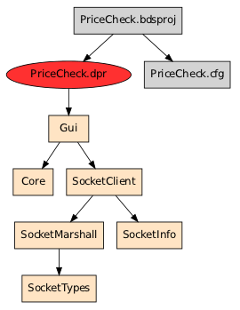
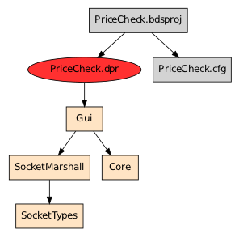

Program graphs get to be large quickly, so comparing them is not trivial. The
tool graphdiff.py makes this easier.
In this example we have a program that has shed a dependency. The uses
statement in Gui.pas used to be:
uses
Windows, Messages, SysUtils, Variants, Classes, Graphics, Controls, Forms,
Dialogs, StdCtrls,
Core,
SocketTypes, SocketMarshall, SocketClient;
And now it is:
uses
Windows, Messages, SysUtils, Variants, Classes, Graphics, Controls, Forms,
Dialogs, StdCtrls,
Core,
SocketTypes, SocketMarshall;
The resulting graphs side by side:
 
graphdiff.py will traverse both graphs in parallel and exit when they are
unequal. Here it will report that Gui.pas has a different list of
dependencies:
$ graphdiff.py .PriceCheck.bdsproj.before.graph .PriceCheck.bdsproj.after.graph
Showing diff between:
- .PriceCheck.bdsproj.before.graph
- .PriceCheck.bdsproj.after.graph
>>> File: Gui.pas
nodes > ../../dcc32/lib/Windows.dcu ../../dcc32/lib/Windows.dcu
| ../../dcc32/lib/Messages.dcu ../../dcc32/lib/Messages.dcu
| ../../dcc32/lib/SysUtils.dcu ../../dcc32/lib/SysUtils.dcu
| ../../dcc32/lib/Variants.dcu ../../dcc32/lib/Variants.dcu
| ../../dcc32/lib/Classes.dcu ../../dcc32/lib/Classes.dcu
| ../../dcc32/lib/Graphics.dcu ../../dcc32/lib/Graphics.dcu
| ../../dcc32/lib/Controls.dcu ../../dcc32/lib/Controls.dcu
| ../../dcc32/lib/Forms.dcu ../../dcc32/lib/Forms.dcu
| ../../dcc32/lib/Dialogs.dcu ../../dcc32/lib/Dialogs.dcu
| ../../dcc32/lib/StdCtrls.dcu ../../dcc32/lib/StdCtrls.dcu
| Core.pas Core.pas
| SocketTypes.pas SocketTypes.pas
| SocketMarshall.pas SocketMarshall.pas
| SocketClient.pas Gui.dfm
| Gui.dfm